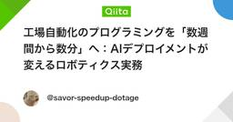
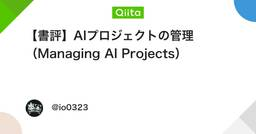

AIタグが付けられた新着記事 - Qiita
https://qiita.com/tags/ai
AIは、「Artificial Intelligence（人工知能）」の略で、人間のような知的な活動（学習、推論、問題解決、理解など）をコンピューターに実現させる技術や、その研究分野全体を指します。コンピューターがまるで人間のように見える振る舞い（学習や判断）を可能にするための技術です。AIの代表的な分野AIは非常に広範な概念であり、その技術は日々進化しています。機械学習（Machine Learning）データから学習し、予測や分類を行う技術ディープラーニング（Deep Learning）機械学習の一種で、多層のニューラルネットワークを用いることで、より複雑なパターンを学習できる技術自然言語処理（Natural Language Processing、NLP）人間の言葉をコンピューターが理解し、処理する技術画像認識（Image Recognition）画像内の物体や人物、パターンなどを識別する技術ロボティクス（Robotics）ロボットの設計、製造、運用に関わる技術リファレンスWikipedia: 人工知能 - Wikipedia関連タグLLM生成AIOpenAIAnthropic
フィード

工場自動化のプログラミングを「数週間から数分」へ：AIデプロイメントが変えるロボティクス実務
AIタグが付けられた新着記事 - Qiita
概要製造業や物流現場における自律化・自動化の試みにおいて、最大のボトルネックの一つとなってきたのが「ロボットプログラミングとティーチングにかかる時間とコスト」です。従来、産業用ロボットアームや周辺機器を導入し、現場の工程に合わせた動作プログラムを構築・検証するには、熟練...
2時間前

【書評】AIプロジェクトの管理（Managing AI Projects）
AIタグが付けられた新着記事 - Qiita
はじめに「AIを使ったプロジェクトは、普通のソフトウェア開発と何が違うのか」設計やアーキテクチャに関心のあるエンジニアなら、一度は考えたことがあるのではないでしょうか。バックログもスプリントもロードマップもあるのに、なぜかAIプロジェクトだけは計画どおりに進まない。こ...
2時間前

「Attention Is All You Need」を読む：Transformer はそれまでの翻訳モデルと何が違い、なぜ大事なのか
AIタグが付けられた新着記事 - Qiita
「Attention Is All You Need」を読む：Transformer はそれまでの翻訳モデルと何が違い、なぜ大事なのかTransformer は、再帰も畳み込みも使わず、Attention という仕組みだけで組み立てた系列変換モデルです。Vaswani ...
2時間前

Cloudflare Radar実測データで見る日本のAIボット比率（ClaudeBot 13.39%）と個人VPS・ブログの無料防御メモ
AIタグが付けられた新着記事 - Qiita
本記事は技術検証メディア SiliconBench で取得した Cloudflare Radar API v4 の公開実測データ（対象期間: 2026-10-31T14:00:00Z 〜 2026-11-28T14:00:00Z、直近 28 日間）に基づく要点メモです。図...
2時間前